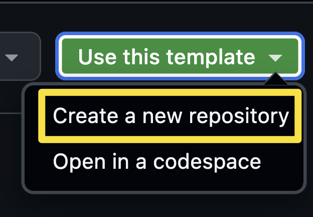
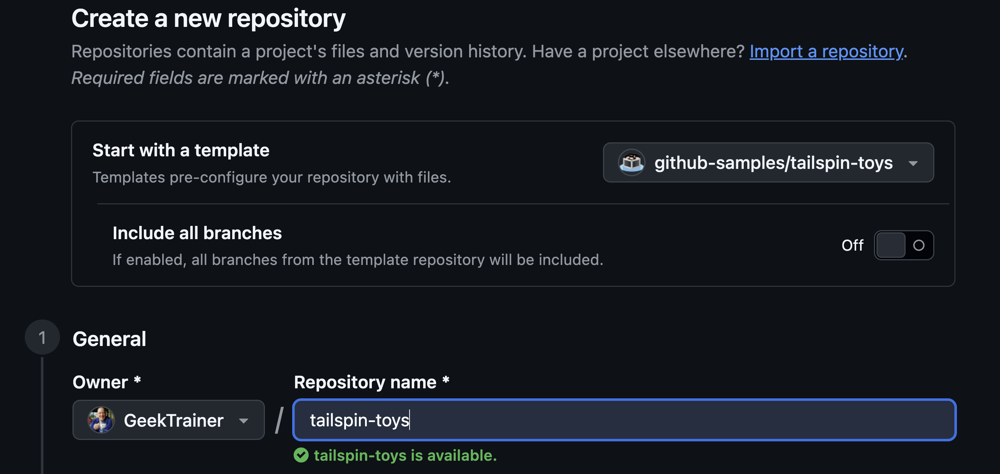

この章の進め方： GitHub Web で演習コピーを準備し、次章で App に接続します。2026年9月13日にテンプレートメニューと作成フォームを確認しました。今回の実走コピー自体は固定コミットから別途作成したもので、Web フォームからの作成完了は未検証です。UI 確認表も参照してください。
GitHub Copilot app は、Copilot と GitHub の両方を一元的に扱うデスクトップアプリです。Issue や pull request にすばやくアクセスでき、もちろん GitHub Copilot を使った開発も可能です。このワークショップでは、Astro で構築された Tailspin Toys アプリと GitHub Copilot app を使い、ローカル環境で作業します。始める前に、Node.js がローカルにインストールされていることを確認してから、Copilot app をインストールします。
このレッスンでは、次の内容を学習します。
- プロジェクトのテストを実行できるよう Node.js をインストールする。
- テンプレートから Tailspin Toys プロジェクトの自分用コピーを作成する。
Node.js をインストールする
いくつかのレッスンでは、エージェントに機能を構築させ、Tailspin Toys のテストスイートをローカルで実行します。そのためには Node.js が必要です。コピーしたリポジトリの package.json に加え、固定された依存関係の要求も満たすバージョンを使用してください。2026年9月13日の検証では Node.js 24.19.0 を使用しました。
どのプラットフォームでも、公式インストーラーを使うのが最も簡単です。
- Windows Terminal、macOS のターミナル、または普段使用しているターミナルを開きます。
-
次のコマンドを実行し、Node.js のバージョンを確認します。Tailspin Toys 本体の
engines.nodeは>=22.13ですが、検証時のeslint-plugin-astroとastro-eslint-parserは^22.22.3 || ^24.16.0 || >=26.3.0を要求していました。本体の最低バージョンだけで判定しないでください。node --version -
演習コピーの依存関係の要求を満たすことを確認できた場合は、次のセクションに進めます。講師は App の実行環境でも同じバージョンが選択されることを確認してください。
ヒント Node.js がインストールされていない場合、または更新が必要な場合にのみ、以降の手順を実行してください。
- Node.js のダウンロードページを開きます。
- 使用しているオペレーティングシステム向けの LTS ビルドをダウンロードします。
- インストーラーを実行し、既定の設定を選択します。Windows では、Add to PATH を選択したままにします。
- インストールが完了したら、新しいターミナルを開きます。
-
新しいターミナルで次のコマンドを実行し、インストールを確認します。
node --version -
インストールしたバージョンが表示され、手順2の条件を満たすことを確認します。App がすでに起動していた場合は再起動し、古い環境変数を使い続けないようにします。
ヒント コンテナーを使用する場合、Docker があれば、Node.js をローカルにインストールする代わりにリポジトリの dev container を使用できます。dev container には Node.js が含まれているため、両方を用意する必要はありません。
ラボ用リポジトリを設定する
Tailspin Toys プロジェクトの自分用コピーを使って作業します。Tailspin Toys のテンプレートから、テンプレートからのコピー作成手順に沿って準備します。次のレッスンで、このリポジトリをアプリに接続します。
講師から検証済みの演習コピーを案内された場合は、それを使用してください。今回の実走は bae003609c8cff0c51d92658b8d3bd89450464f1 を出発点にしています。Use this template で新しく作るコピーはテンプレートの現在の内容であり、固定コミットや後の演習で加えた修正が自動的に入るわけではありません。講師は開催前に依存関係・App 設定・MCP 定義を検査してください。教材リポジトリ dev-days-jp と、コードを変更する Tailspin Toys のコピーは別のリポジトリです。
- 新しいブラウザーウィンドウで、このラボの GitHub リポジトリ
https://github.com/github-samples/tailspin-toysを開きます。 -
ラボ用リポジトリのページで Use this template ボタンを選択し、Create a new repository を選択して、リポジトリの自分用コピーを作成します。

参照元の画面例（撮影時バージョン不明・現行 UI 未照合）。位置やメニューの開き方は講師と確認してください。 -
Start with a template が
github-samples/tailspin-toysであることを確認します。Include all branches は既定の Off のままにし、Owner に自分または許可された組織、Repository name に演習用の名前を指定します。Choose visibility はメンターの指定に従います。2026年9月13日のフォームでは初期値は Public でした。非公開の演習にする場合は Private を選択してください。
参照元の画面例（撮影時バージョン不明・現行 UI 未照合）。位置やメニューの開き方は講師と確認してください。 -
任意項目の Jumpstart your project with Copilot の Prompt は、この教材では空欄のままにします。内容を確認して Create repository を選択します。
- 作成したリポジトリのパス (organization-or-user-name/repository-name) を記録します。このラボで後ほど使用します。
補足 コピー側の Bootstrap template issues ワークフローが成功すると、GitHub Issue のバックログが作成されます。すぐに見えない場合は、自分のコピーの Actions で実行結果を確認してください。参照元へ Issue を作成しないでください。
講師向け： 緊急の作業保全が必要な場合だけ 対応手順 を参照してください。CLI の実装成功は、この章の App 操作の完了には数えません。
まとめと次のステップ
準備が整いました。プロジェクトをコンピューター上でビルドしてテストできるように Node.js をインストールし、テンプレートから Tailspin Toys リポジトリの自分用コピーを作成しました。
次は GitHub Copilot app をインストールし、作成したリポジトリを接続して、ワークスペースを確認します。レッスン 1「GitHub Copilot app のインストール」に進んでください。